Drawing Preferences
You can specify preferences for paper, units, grid, dimensions, and splines from the Current Drawing Preferences window (Options > Current Drawing Preferences). These preferences will save to the current drawing and any drawing you create in the future, but they won't affect preferences from any existing drawing that you open in LibreCAD.
Paper
Set the paper size format, orientation, margins, and the number of pages.
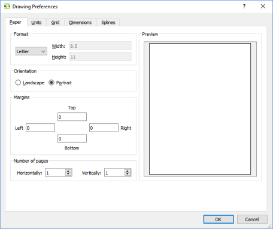
Number of Pages
The number of horizontal and vertical pages creates tiled printing and is helpful for creating the right page layout for your drawing, if you intend to print the drawing on paper.
Example
If both Horizontally and Vertically are set to 1, only one page will print, as shown in the print preview:
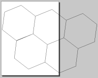
If Horizontally is set to 2 and Vertically is set to 1, then two pages will print side-by-side, as shown in the print preview:
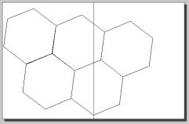
Similarly, if Horizontally is set to 1 and Vertically is set to 2, two pages will print on top of each other, as shown in the print preview:
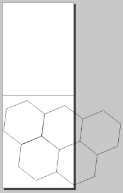
In the Print Preview (File > Print Preview) view, you can move the paper around the drawing to lay out how your drawing will be printed. This may be helpful if you have a drawing that spans multiple pages.
Units
Set the preferred Main Units for your drawing along with Length Format and Precision and Angle Format and Precision.
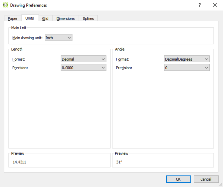
| Format | Example | Maximum Precision | Description |
| Scientific | 1.44311E+1 | 0.00000000E+1 | Significant x 10n |
| Decimal | 14.43112 | 0.00000000 | Integer part separated from the fractional part of a number by a decimal |
| Engineering | 1'-2.43112" | 0’-0.00000000’‘ | Feet and decimal inches |
| Architectural | 1'-2 7/16" | 0’-0 1/128’‘ | Feet and fractional inches |
| Fractional | 14 7/16" | 1/128’‘ | Fractional inches |
| Architectural (metric) | 14.431125 | 0.00000000 | Decimal metric units (mm, cm, and so forth) |
| Format | Example | Maximum Precision | Description |
| Decimal degrees | 30.5° | 0.00000000° | Integer part separated from the fractional part of a number by a decimal |
| Deg/Min/Sec | 30° 32’ 0" | 0° 00’ 00.0000" | Degrees (°) / Minutes ( ‘, 1/60 of a degree) / Seconds ( ", 1/60 of a minute) |
| Gradians | 33.9g | 0.00000000g | 1/400 of a circle |
| Radians | 0.5r | 0.00000000r | SI unit of measure where the arc of a circle is measured by the length of the radius |
| Surveyor's units | N30d32’E | N0d00‘00.0000’‘E | Cardinal directions measure in degrees/minutes/seconds from North and East |
Set grid preferences for the main drawing, including whether to show the grid, use an orthogonal or isometric grid, and X and Y spacing.
Grid Settings
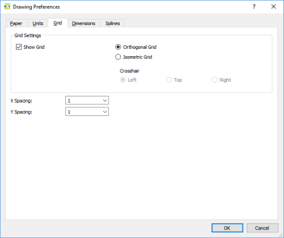
Orthogonal Grid
Places the grid at right angles to the X and Y axis
Isometric Grid
Places the grid markers at 30° to the horizontal for guiding isometric drawings.
Crosshair: Left, Top, Right
When using an Isometric Grid, toggles the orientation of the cross-hairs (right, left, or top) when used with Isometric Snap indicator lines (see Application Preferences).
| Orthogonal Grid | Isometric Grid |
|
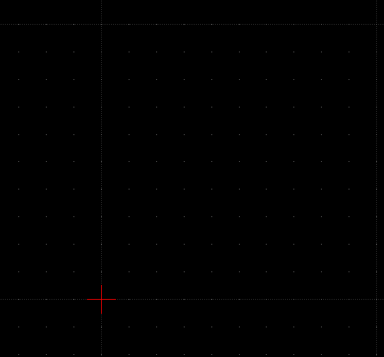 |
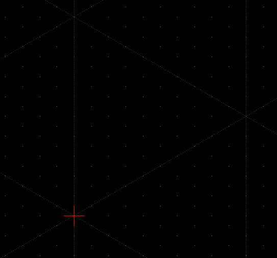 |
When the Application Preference for Adjust grid scaling is unchecked, these options control the Grid Status, or the grid scaling in the drawing.
|
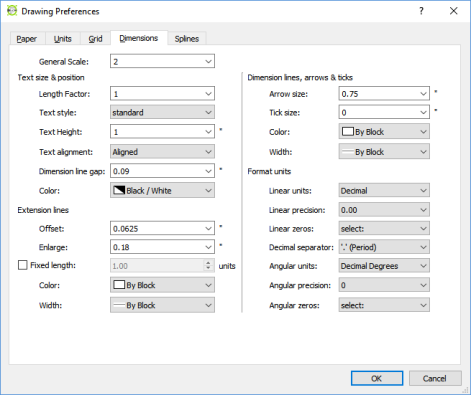 |
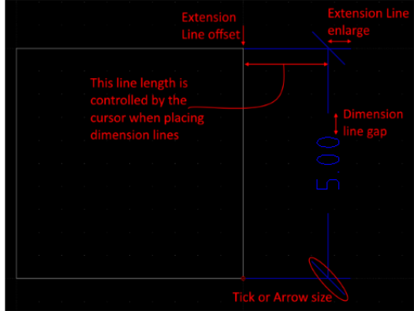 |
| Setting | Description |
| General Scale | Adjusts the sizes of the text and arrows by the factor provided. |
| Text size & position | |
| Length factor | Adjusts the dimension value by the factor provided. The entity remains the length as drawn. |
| Text style | Sets the font used for dimension text. |
| Text height | Sets the text height, measured in the units defined on the Units tab. |
| Text alignment | Aligns the text parallel and offset to the dimension line or horizontal centered on the dimension line. |
| Dimension line gap | Sets the space between the dimension line and the dimension text. |
| Color | Set the color of the dimension lines and text. |
| Extension lines | |
| Offset | Gap between entity and dimension extension line. |
| Enlarge | Length of extension line beyond dimension line. |
| Fixed length | Fixed length of extension line measured from the dimension line towards the dimensioned entity. |
| Color | Extension line color, independent of layer settings. |
| Width | Extension line width, independent of layer settings. |
| Dimension lines, arrows, and ticks | |
| Arrow size | Length of dimension (and leader) arrow. The arrow is only shown if the Tick size is 0. |
| Tick size |
Length of dimension tick from the end of the dimension line in each direction. Any size greater than 0 will result in a tick instead of a dimension arrow. For example, a length of 1 will result in a total length of 2 units. |
| Color | Tick line color, independent of layer settings. |
| Width | Tick line width, independent of layer settings. |
| Format units | |
| Linear units | See Length Format above. |
| Linear precision | See Length Format above. |
| Linear zeros | Remove leading, trailing, 0’ and/or 0" from linear dimensions. |
| Decimal separators | Set the decimal separator to a period (.), or comma (,). |
| Angular units | See Angle Format above. |
| Angular precision | See Angle Format above. |
| Angular zeros | Remove leading or trailing zeros from angular dimensions. |
The Number of line segments per spline patch parameter affects the smoothness of the spline. The greater the number, the smoother the spline will be because it is broken out into smaller segments.
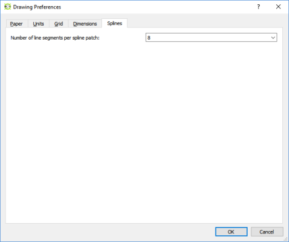